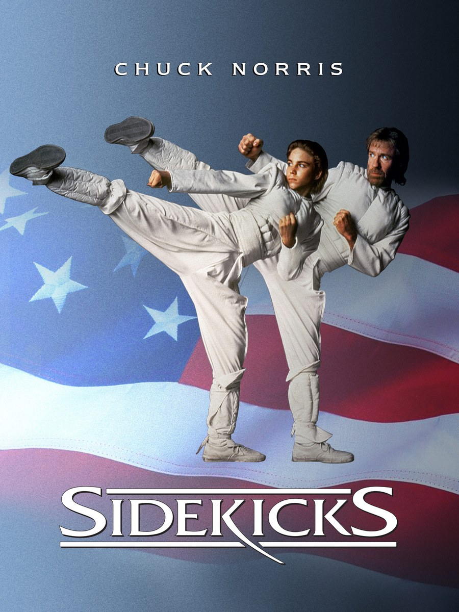
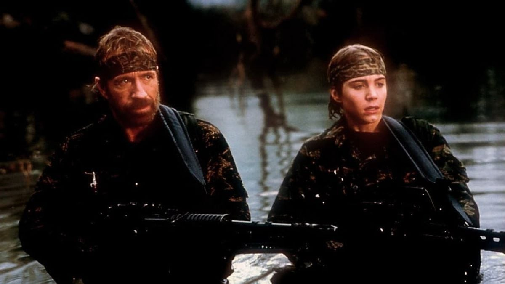
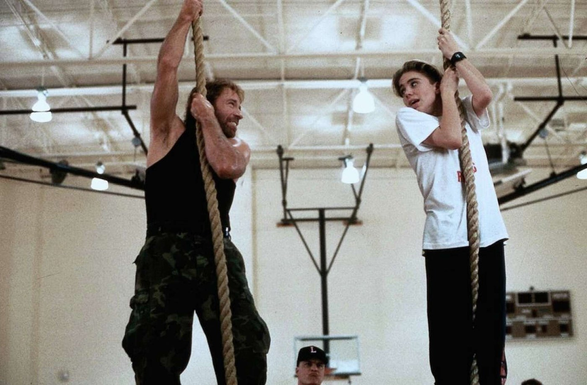

J'ai vu Sidekicks très souvent quand j'étais ado. Je pratiquais le karaté, mais ce n'est pas seulement pour ça que ce film me parlait.
Il me parlait parce que je me retrouvais en Barry, ce garçon asthmatique, comme je l'étais enfant, qui s'invente un univers pour s'échapper. Dans ce monde, il affronte ceux qu'il n'ose pas affronter dans la réalité, aux côtés de son héros : Chuck Norris. J'aurais tellement pu être ce gamin. À l'époque, le collège était une jungle, et les harceleurs, des ennemis à affronter.
Je l'ai revu il y a environ deux ans, et le plaisir était toujours là. Ma scène préférée : celle où Barry se voit en ninja blanc lors du tournoi final, avec la démonstration de nunchaku.
Ce soir, on retourne dans l'univers de Barry.

L'affiche de Sidekicks
Sidekicks est un film américain sorti en 1992. Il est réalisé par Aaron Norris, le frère de Chuck Norris, d'après un scénario de Lou Illar et Galen Thompson. Il dure 101 minutes.
Jonathan Brandis joue Barry, le garçon au centre de l'histoire. Chuck Norris joue son propre rôle. Beau Bridges est Jerry, le père de Barry, et Mako joue Mr. Lee. À leurs côtés, Julia Nickson-Soul est Noreen Chan, Danica McKellar joue Lauren, Joe Piscopo est Kelly Stone et Richard Moll joue Mr. Horn.
Le film est produit par Don Carmody, pour Vision PDG et Gallery Films. La musique est d'Alan Silvestri. Il est distribué par Triumph Films.
Il sort en Allemagne le 17 décembre 1992, puis aux États-Unis en avril 1993.
Tout part de Houston, au Texas. Jim McIngvale, surnommé « Mattress Mac », patron d'une chaîne de magasins de meubles, avait déjà tourné des publicités locales avec Chuck Norris. C'est Chuck Norris qui suggère l'idée du film. McIngvale accepte de le financer et de le produire, en lien avec la campagne contre la drogue à l'école menée par l'acteur. Il y investit environ 8 millions de dollars.
Pour la réalisation, Chuck Norris s'appuie sur son frère. Aaron Norris, longtemps son coordinateur de cascades et réalisateur de seconde équipe, passe derrière la caméra.
Le tournage commence le 18 novembre 1991. Il se déroule surtout à Houston, avec aussi des prises de vues à Los Angeles. Le lycée Lamar fait partie des lieux de tournage.
Les rêves de Barry sont des parodies de films de Chuck Norris, notamment Missing in Action, The Delta Force et The Hitman. Danica McKellar garde le souvenir de Chuck Norris et d'Aaron Norris comme d'hommes attentionnés avec toute l'équipe.
À sa sortie aux États-Unis, le film entre à la deuxième place du box-office. Il rapporte au total 17 180 393 dollars sur le territoire américain, pour un budget estimé entre 8 et 10 millions.

Une scène de Sidekicks
Barry Gabrewski est un adolescent de Houston, asthmatique, harcelé à l'école. Il vit avec son père, Jerry, qui est veuf.
Pour échapper à son quotidien, Barry s'invente un monde. Dans ses rêves éveillés, il combat aux côtés de son idole, Chuck Norris, des méchants hauts en couleur, qui ressemblent à ceux qui le tourmentent dans la vraie vie. Il est aussi amoureux de Lauren.
Barry veut apprendre le karaté. Kelly Stone, maître d'un dojo, le refuse : il le juge trop faible. C'est Mr. Lee, propriétaire d'un restaurant et oncle de Noreen Chan, la professeure préférée de Barry, qui l'accepte. Il travaille son endurance et son souffle, et lui redonne confiance en lui.
Un tournoi de karaté approche. Reste à savoir si Barry sera à la hauteur, et ce que deviendront ses rêves.
Sidekicks repose sur une idée simple : un enfant se réfugie dans l'imaginaire pour affronter ce qu'il n'ose pas affronter dans la vraie vie. Barry rêve de Chuck Norris parce qu'il est harcelé, asthmatique et seul. Ses rêves, des parodies des films de son idole, sont une échappatoire.
Le film mêle deux registres. D'un côté, la comédie fantaisiste de ces rêves, qui reprennent notamment Missing in Action et The Delta Force. De l'autre, un récit d'apprentissage, dans la lignée de Karaté Kid. Mr. Lee tient le rôle du mentor : il travaille l'endurance et le souffle de Barry, et l'aide à retrouver confiance en lui. Chuck Norris joue de sa propre image en se parodiant lui-même.
À sa sortie, la critique américaine est dure. Gene Siskel et Roger Ebert lui donnent « deux pouces vers le bas ». Rotten Tomatoes affiche aujourd'hui 26 % d'avis favorables, sur 19 critiques. Plusieurs journalistes y voient une copie de Karaté Kid. Chris Hicks, du Deseret News, trouve l'idée de Chuck Norris qui se moque de son image macho prometteuse, mais regrette que le réalisateur ne sache pas la rendre drôle. Marc Savlov, de l'Austin Chronicle, juge le film très faible, tout en notant que Mako est le seul à avoir du charisme à l'écran.
D'autres sont plus indulgents. Jeff Shannon, dans le Seattle Times, reconnaît des maladresses, mais estime que ses bonnes intentions l'emportent. Il retient ses messages simples sur la discipline, le dépassement de soi et les modèles, adressés aux enfants de 10 à 15 ans.
Pour moi, c'est là que le film touche juste : il ne parle pas seulement de karaté, mais de ce qu'on invente pour tenir quand on est le plus fragile.

Une autre scène de Sidekicks
Pourquoi Sidekicks est-il resté dans l'ombre ? Plusieurs pistes, que les faits permettent d'avancer.
D'abord, l'accueil critique. Aux États-Unis, Siskel et Ebert lui donnent « deux pouces vers le bas », et plusieurs journalistes y voient une copie de Karaté Kid. Il n'a pas eu la reconnaissance d'un film culte à sa sortie.
Ensuite, l'image de Chuck Norris. Le film le présente en modèle pour les enfants, loin de l'action musclée des années 80 qui l'avait rendu célèbre. Marc Savlov, de l'Austin Chronicle, y voit une tentative de le transformer en héros d'action « adapté aux enfants ». Un article français de 24matins estime que le jeune public préférait ses scènes d'action.
Puis il y a la confusion. En 1992 sort aussi 3 Ninjas, et beaucoup de spectateurs mélangent encore les deux films, selon JoBlo.
Pourtant, ce n'est pas un échec commercial : le film entre à la deuxième place du box-office américain et rapporte plus de 17 millions de dollars, pour un budget de 8 à 10 millions.
Et son retour est récent. En 2023, Vinegar Syndrome publie une édition restaurée en 4K à partir du négatif original 35 mm. En juin de la même année, un journaliste désigne Sidekicks comme le film le plus sous-estimé de Chuck Norris, au Nashville Comic-Con. Chuck Norris est d'accord, et dit qu'il garde une place spéciale dans son cœur. Le film n'est pas oublié de ceux qui l'ont vu enfant : il attend simplement qu'on le redécouvre.
Pourquoi remettre Sidekicks dans le lecteur aujourd'hui ?
D'abord pour son sujet. Un enfant harcelé qui s'invente un monde pour tenir, c'est une histoire qui parle encore. Jeff Shannon, du Seattle Times, y voyait déjà des messages simples sur la discipline, le dépassement de soi et les modèles.
Ensuite pour Chuck Norris. Il y joue son propre rôle et se moque gentiment de son image, dans des rêves qui parodient ses films, comme Missing in Action ou The Delta Force. Il est mort en mars 2026, à 86 ans. Le revoir ici, c'est le retrouver dans un rôle où il ne se prend pas trop au sérieux.
Pour les acteurs aussi. Jonathan Brandis porte le film dans le rôle de Barry. Et même les critiques les plus sévères reconnaissent le charisme de Mako, dans le rôle de Mr. Lee.
Enfin, parce qu'il se voit mieux qu'avant : depuis 2023, il existe une édition restaurée en 4K à partir du négatif original.
Je l'ai revu il y a deux ans environ, et le plaisir était toujours là. C'est peut-être la meilleure raison.
Sidekicks n'a pas séduit les critiques de l'époque. Mais c'est un film sincère : celui d'un garçon qui s'invente un héros pour tenir, et d'un héros qui accepte de se moquer de lui-même.
Il a mis du temps à sortir de l'ombre, entre la comparaison avec Karaté Kid et la confusion avec 3 Ninjas. Mais pour ceux qui l'ont vu enfant ou adolescent, il n'a jamais vraiment quitté la mémoire.
Merci d'avoir regardé ce nouvel épisode de SOMEDAY. Et si, comme moi, vous vous êtes déjà retrouvés dans la peau de Barry, dites-le-moi par mail.
La cassette est dans le lecteur. On rembobine.
Titre original
Sidekicks
Pays
États-Unis
Genre
Comédie dramatique · Action
Durée
101 min
Producteur
Don Carmody · Vision PDG · Gallery Films
Avec aussi
Beau Bridges · Mako · Joe Piscopo · Danica McKellar
Scénario
Lou Illar · Galen Thompson
Note
Vu souvent à l'adolescence
SOMEDAY — S3 EP. 11